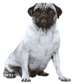
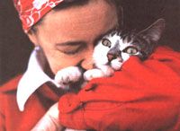
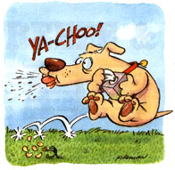

Pet Health
How do you pick up a rabbit? Andrea Looney, D.N., answers that and other householdanimal questions.
Dear Andrea:
I was servicing my truck one day and accidentally spilled some antifreeze on the floor of the garage. My dog, who was keeping me company, began licking the puddle. Although I pulled him away immediately, he loitered around that spot even after I cleaned it up. What is it about antifreeze that attracts my dog so much?
-Terry Dennis Eugene, Oregon
Dear Terry:
When someone mentions the word "poison," we usually visualize a bottle of lethal powder or fluid deliberately given to an unsuspecting individual. Many ordinary, seemingly innocent, household and garage items, however, can be quite harmful, if not fatal, to pets. Antifreeze is one of the most potent of these chemicals. It has a sweet taste that attracts many animals and explains your dog's fascination. Upon ingestion, the substance is quickly absorbed and metabolized to form certain acids. These acids then combine with calcium to cause crystals that lodge in the kidney tubules. Animals that become toxic from ingesting antifreeze succumb to renal (kidney) failure from crystallization of this important organ.
Less-toxic antifreezes (such as one marketed by Safe Brands Corporation of Omaha, Nebraska) are now available. To be sure that your pet doesn't ingest any antifreeze (as well as to avoid poisoning the underground water supply), don't drain it onto the ground or driveway; instead drain it into a covered container or sand receptacle and dispense properly. Watch for leaky radiators or hoses; they may drip small amounts of antifreeze for days before the problem is discovered. Should your cat or dog walk through such a puddle, try to wipe their feet off before they lick them.
Dear Andrea:
My 6-year-old semi-long-haired cat can't seem to eat any food without getting sick to his stomach. What can I do?
-K Smith Cantor, Ohio
Dear K:
Cats vomit for a variety of reasons. The most common reasons include parasites and hairballs. Parasites may be treated with appropriate anthelmintics or de-wormers, best obtained from your veterinarian and specific for the type of worm the animal has.
Hairballs are especially prevalent in long-haired cats. As the cat cleans itself, the loose, shed hairs are often swallowed. In the stomach, they may form a mass, often incapable of passing into the intestines. If the mass does pass, it may cause obstruction of the intestines or constipation.
There are special preparations, usually with a mineral oil or petroleum base, that may simply allow passage of the hair down the GI tract. Vaseline may also be helpful in very small amounts but rarely does the trick on its own. You may also try fresh pineapple juice or papain tablets (from the local health food store), both of which will digest the hairs instead of promoting their passage. The best treatment of hairballs is once again, prevention. I would suggest frequent brushing of the animal, possibly once or twice a day to remove those broken and shed hairs before they are groomed and swallowed.
Also, try switching the diet to a bland cat food (which doesn't necessarily mean a poorer quality food!). For instance, the semimoist foods or simple boiled chicken and cooked white rice for a few days may help calm the gastrointestinal system. Feed s mall amounts 4-5 times per day instead of one lump sum. Make any dietary changes gradual, or over a few meals. See your veterinarian if things continue because there are many other more serious problems (infections, thyroid disease, liver, or kidney disease) that can also cause vomiting.
Dear Andrea:
Our 12-year-old Gordon setter was recently dialed with renal failure. How long will he five and what does this mean?
-Carol Newell Helena, Montana
Dear Carol:
Kidneys filter and remove from the blood- stream waste materials acquired from the body's metabolism. Kidney disease refers to any destructive process within the kidney. Kidney failure is the end result of kidney disease. Failure may have many different causes, including inherited defects, infections, ingestion of toxic substances, and nutritional factors. It is one of the most common medical problems in geriatric dogs and cats and often occurs secondary to heart failure and hypertension. In kidney (renal) failure, the kidney fails to filter blood adequately, so some of the waste materials remain in the blood and become toxic to cells.
If it is detected early on, a change in diet may be all that is required to treat kidney disease. Kidney failure, however, may make it necessary for an ill pet to be hospitalized for proper fluid therapy and medications. Dietary management is an important part of therapy. By feeding your pet a well-balanced diet with reduced amounts of phosphorus and sodium and including high- quality protein, the quantity of waste materials filtered by the diseased kidneys is also reduced. Frequently, supplementing with a multiple vitamin (one a day) may be beneficial. You may slow the progression of chronic renal failure by providing such sound nutrition and free access to plenty of clean, fresh water and protecting your pet from stress, such as excitement, extreme exertion, or hot and cold temperature extremes.
Dear Andrea:
We just purchased a rabbit for our son. I realize Hurt there are certain ways to hold the animal and pick him up. What's the best way?
-Marlene Cohen Spokane, Washington
Dear Marlene:
Rabbits have very powerful hind limbs, and are capable of delivering very strong kicks, so strong, in fact, that they may easily dislocate or fracture their vertebrae (break their back). The key, therefore, in handling a bunny, is to calmly gain control of their hind end first and foremost. Grasp the skin above the shoulders (scruff) with one hand and support the hind end under the rump with the other. Some folks carry the rabbit like a football with the head at the handler's elbow and the rump in the palm of the hand.
Never pick a rabbit up by its ears! Contrary to popular opinion, these are not handles, and this may easily injure the animal. If the rabbit begins to struggle when initially picked up or restrained, it should be released. Attempt restraint when it calms down.
Dear Andrea: What causes allergies in dogs? Our Labrador retriever sneezes all the time.
-David Wescott Provo, Utah
Dear David:
Just like us, dogs suffer from allergies. However, where human allergy symptoms normally include sneezing, wheezing, runny nose, and watery eyes, a dog's allergy symptoms differ. Although canine allergies are not life threatening, the itching that they cause can make your dog miserable.
An allergy is a disease that is a result of the immune system reacting abnormally to a substance, such as pollen, mold, house dust, insect bites (fleas), food, or certain chemicals. Inhaling, eating, or simple contact with these substances can cause a reaction in an allergic animal. The most commonly seen allergies in dogs are to fleas, foods, and inhaled substances. These types of allergies are almost always manifested by itchiness and scratching, not sneezing. This scratching is more intense than normal, and can result in rashes, hair loss, and secondary infections.
There are many drugs that can be given to treat allergies including antihistamines, steroids, and topicals. The best and most obvious treatment is avoidance of the aller gens, such as limiting intake of certain foods and stringent flea control. While it is impossible to avoid airborne allergens like pollens and weeds, desensitizing your pet to offending substances through immunotherapy can control much of the itching aggravation.
Dear Andrea:
What is the normal length for claws in dogs? Our shepherd can deliver a bad scratch, even when just playing with us, but we worry about trimming him. What happens if they're trimmed too short?
Andrew Konig
Deerfield, Massachusetts
Dear Andrew:
A dog's nail length should be checked periodically, possibly even once a month. Some dogs, especially those that don't go outside much, fail to wear down their nails naturally. Some can grow so long that they spiral back on themselves or stick into a pad. Such a condition is not only extremely painful but can produce permanent damage if not soon taken care of.
The normal, well groomed nail is about even with the bottom pads of the foot, so that when the dog walks, the nails barely brush the ground. When they begin to develop a hook or become longer than the arc of a 90° angle (1/4 of a circle), then they are too long. A nail trimmer is an inexpensive purchase. Don't use ordinary scissors as they will crack the nail. In the beginning, take only a little off at a time from each nail. Trim carefully, but try to cut quickly to avoid a crushing action with the blade.
There are blood vessels within the nail itself that are easily seen in clear nails, but invisible in pigmented nails. If a nail is clipped too short, it will bleed. Should this occur, you can dab it with a styptic pencil, apply a poultice of corn starch and water, press the nail into a bar of soap, or apply pressure with a cloth for a few moments to stop the bleeding.
DON'T LET THE TASTE FOOL THEM!
The flavor of antifreeze can be appealing to animals, but it is a lethal poison.
|
How to keep the nails on your dog from becoming a menace? |
 |
 |
|
 |
|
|